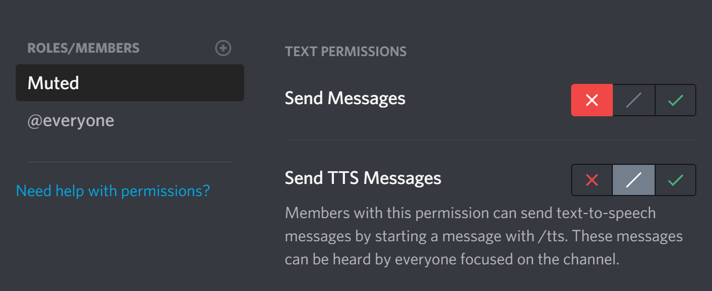

How to set up a muted role.
This guide will cover how to create a muted role and make Konek0 recognize this role.
A muted role is a role that users are assigned when you want to prevent them from typing.
This requires basic knowledge of your settings file. You can read the basic guide here.
1) Create the role
1. Create a role called 'Muted' (or anything else) and clear its permissions.
2. Make sure every channel has denied the send messages permission for the role.

2) Make Konek0 recognize the role
1. Open your settings file and go to "muted_role".
2. Copy the ID of the muted role.
3. Paste the role ID in your settings file.
4. Upload your settings file to Konek0.